Back
All categories
R
Python
ArcGIS
PowerBI
Tableau
Other
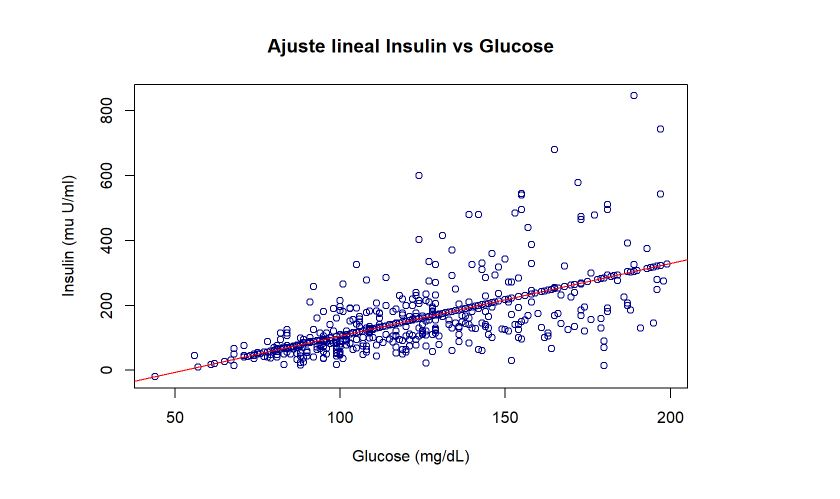
R
Predictive models for diabetes.
After reasoning the relationship between different variables, we proceed to the application and evaluation of different supervised and unsupervised models to predict whether patients in a data set have diabetes or not.
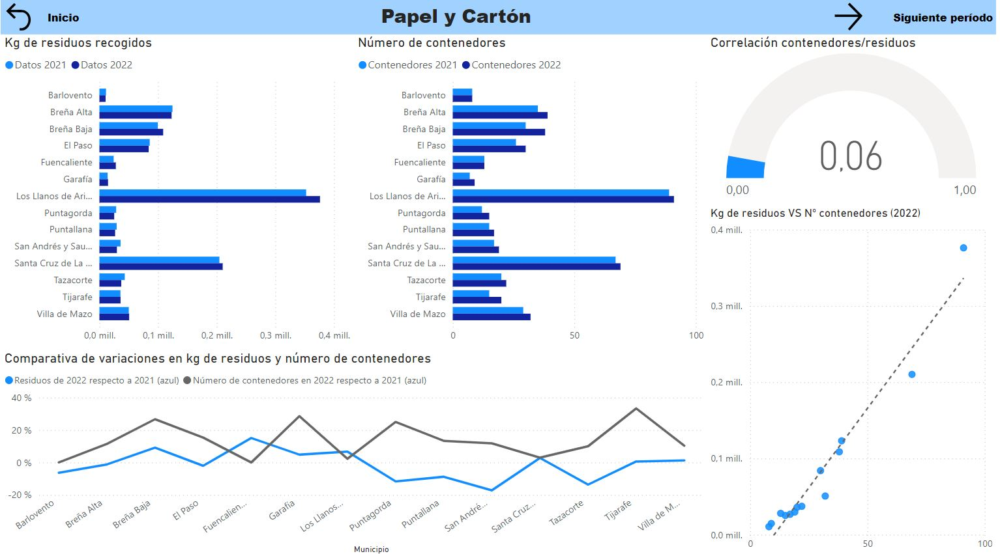
PowerBI
Dashboard residues management.
This dashboard developed in PowerBI allows the analysis of waste management data, offering interactive visualizations that facilitate decision making in waste management.
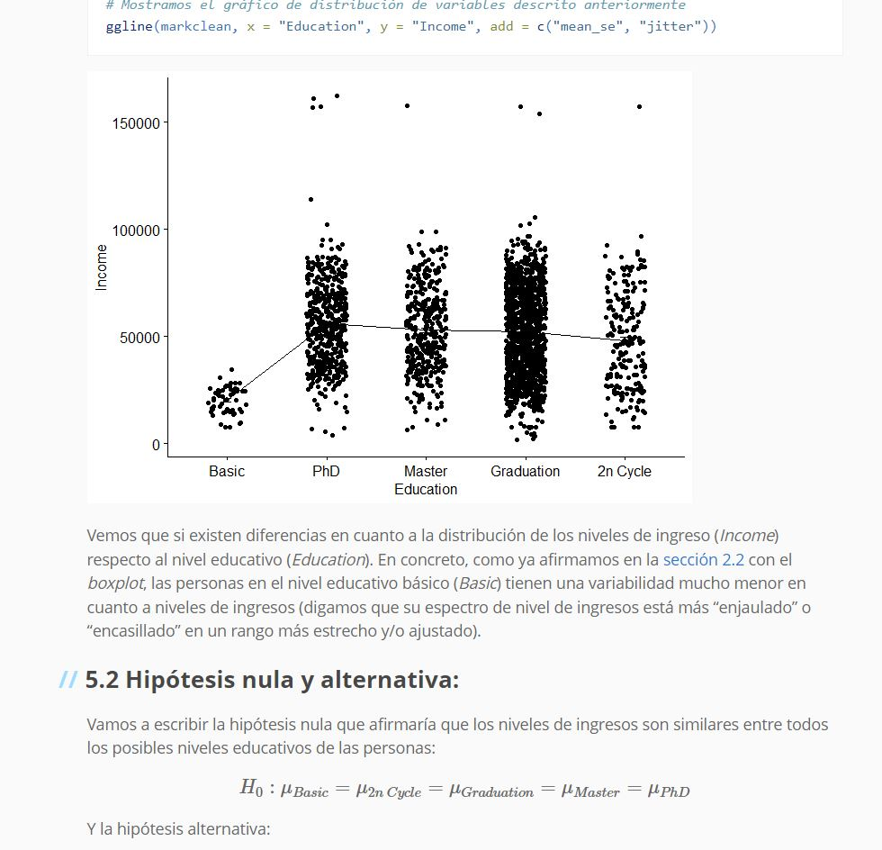
R
Marketing: Statistics analysis.
Data analysis and application of advanced statistical techniques to optimize marketing strategies in the (fictitious) iFood platform using R. The data with which we work correspond to a set of citizens and in it we indicate the year of birth, educational level and their response to previous marketing campaigns as well as their buying habits according to the type of products and quantity of them purchased.
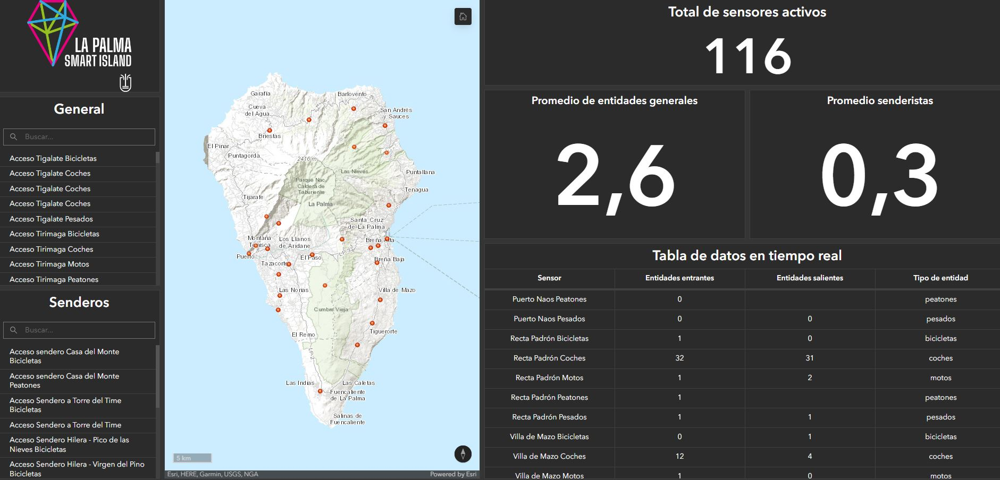
ArcGIS
Real-time people and vehicle counting dashboard.
This dashboard in ArcGIS Online provides real-time tracking of the movements of people and vehicles in different areas, ideal for urban management and events. The data is collected by cameras deployed on the island under the La Palma Smart Island project and obtained through an API under an automated Python notebook on the ArcGIS Online platform and then dumped into a layer that is updated periodically and from which we generate the dashboard. (MAY NOT BE VISIBLE IF AT THE TIME IT IS NOT A PUBLIC RESOURCE OF THE LOCAL ADMINISTRATION).
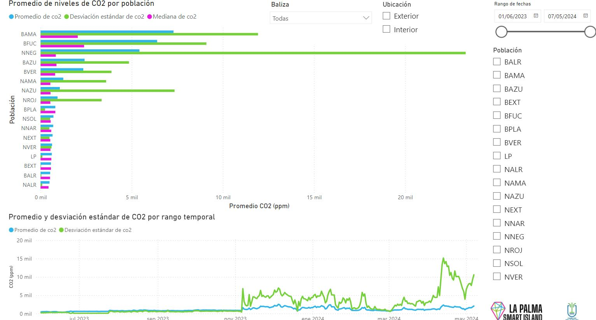
PowerBI
Dashboard CO2 measures in the exclusion zone La Palma's 2021 volcano.
Monitoring of CO2 levels in the areas affected by the volcanic eruption of La Palma in 2021, using interactive visualizations in PowerBI. This dashboard helps in making decisions on which sections of the affected population can be enabled to return to their residents or not according to the CO2 levels in ppm (parts per million) recorded by a series of beacons deployed under the La Palma Smart Island project.
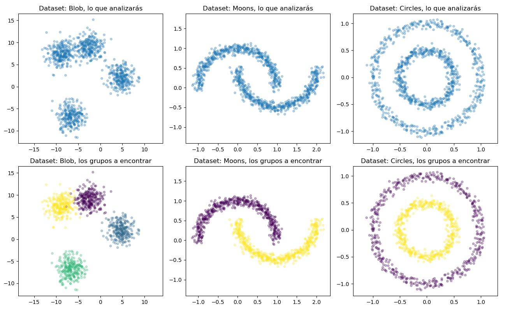
Python
Data clustering models.
Implementation and evaluation of clustering models for data segmentation, using Python libraries and synthetic data (randomly simulated by ourselves).
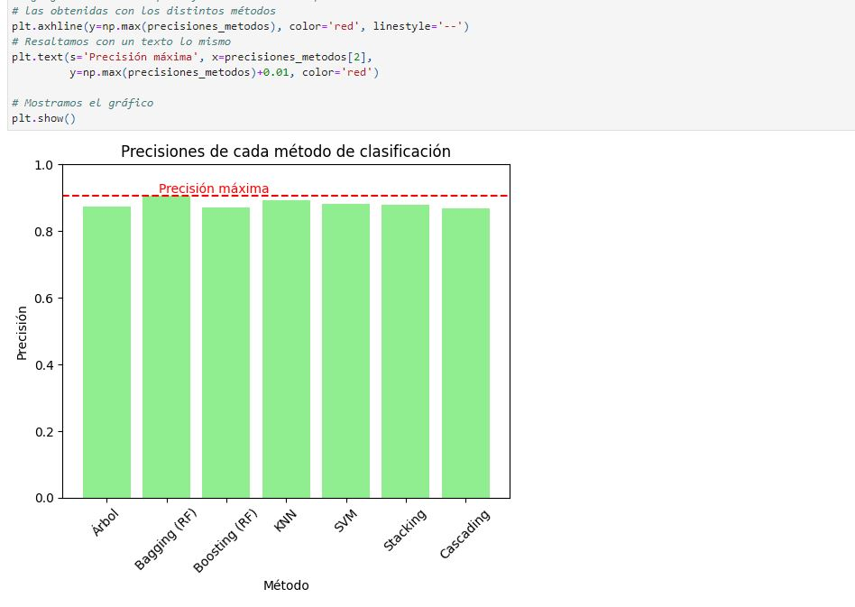
Python
Combining and evaluating different regression models
Comparative study and combination of different regression techniques to improve the accuracy of predictive models in Python. In this case we start from a dataset of patients who have suffered a myocardial infarction and compare the accuracy obtained after applying different methods (and combination of them) classifiers.
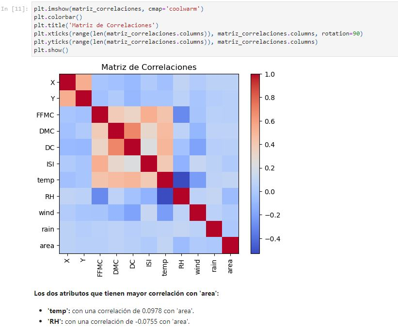
Python
EDA and preprocessing of a forest wildfire dataset.
Data exploration and preprocessing for predictive analysis of forest fires, using Python. In this project, after preprocessing and data cleaning, we determine through a correlation matrix those variables that are most influential in the occurrence of a fire and, based on these results, we carry out a dimensionality reduction of the problem to subsequently analyze the variability of the target (area of the surface burned in the fire).
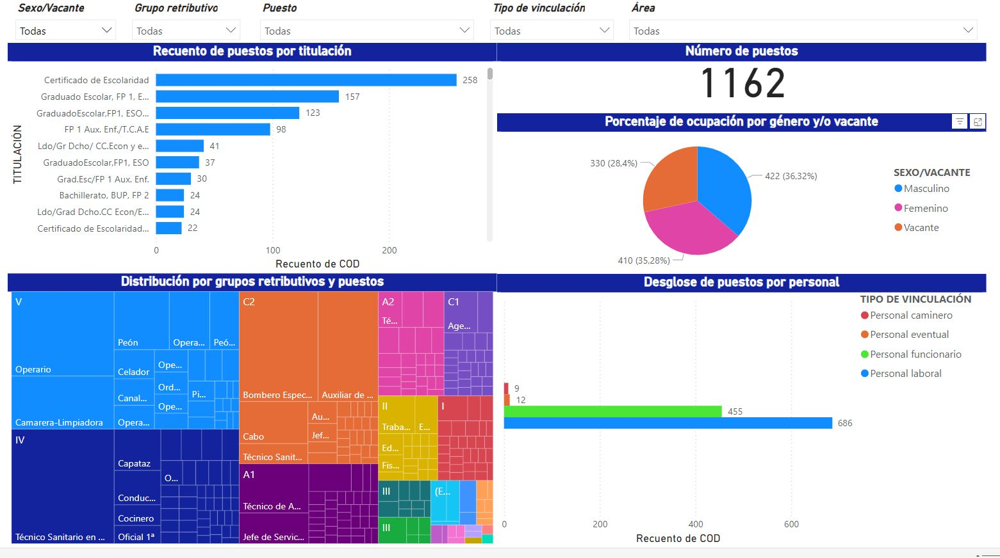
PowerBI
Dashboard JPI of Cabildo de La Palma (2023).
Interactive visualization of the Job Position Inventory (JPI) of the Cabildo de La Palma for the staff of the year 2023. In this dashboard we can visually relativize the number of staff assigned to different sections of the local public administration according to their level of studies or pay groups.
Tableau
Dashboard tracking the COVID-19 vaccination.
Follow-up of the vaccination process against COVID-19, with interactive visualizations in Tableau. We track the percentage of the population unvaccinated, with one or both doses of the vaccine depending on the country and we also make a comparison between countries, the vaccinated and the GDP of the country.
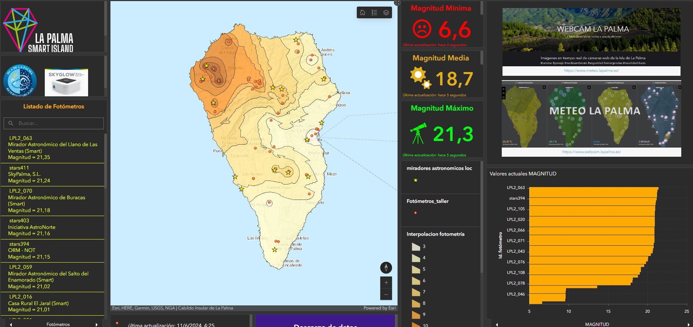
ArcGIS
Dashboard and data interpolation about photometric data in real time.
Real-time photometry dashboard, with interpolation of night sky brightness data measured by a network of photometers deployed on the island of La Palma under the La Palma Smart Island project. This dashboard as well as the automated Python notebooks to update the data through different APIS in the ArcGIS Online platform. (MAY NOT BE VISIBLE IF AT THE TIME IT IS NOT A PUBLIC RESOURCE OF THE LOCAL ADMINISTRATION).
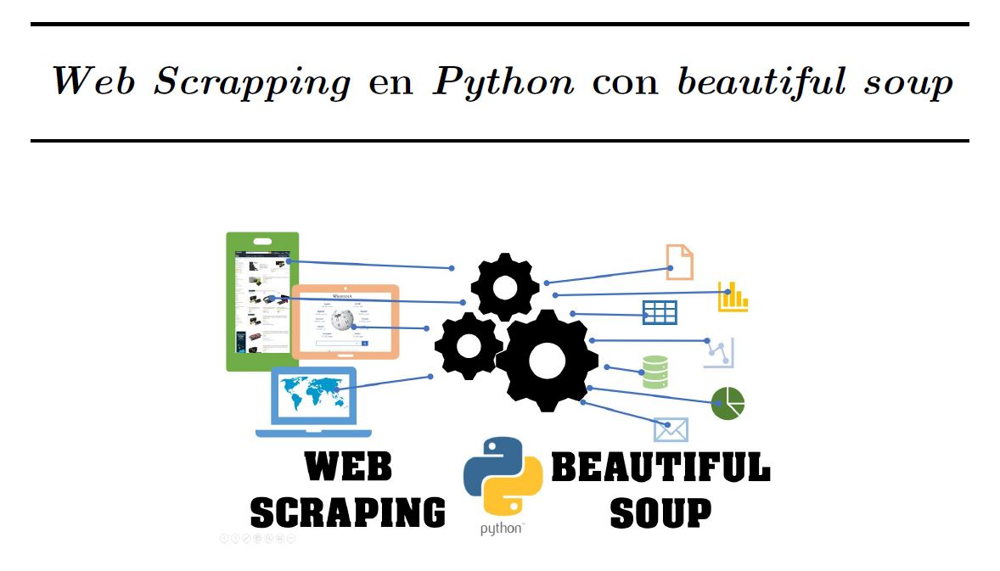
Python
Web Scrapping.
Web scraping techniques to extract data from websites efficiently using Python. Specifically, we generated a dataset about movies through web scraping to the Filmaffinity web portal (which lacks API).
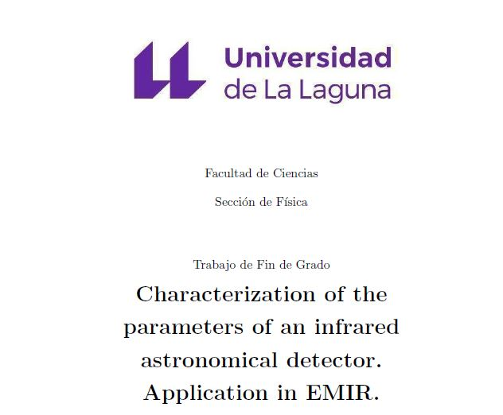
Other
Final degree project: Characterization of the parameters of an infrared astronomical detector.
Final degree work carried out under the supervision of Francisco Garzón López, EMIR project leader at the GTC of the IAC and professor at the ULL. In this project we analyzed and adjusted the intrinsic parameters of the detector in order to take them into account in the correction of future data collected with this instrument. The analyses were done with numerous Python scripts developed for this purpose from scratch and based on the theory of astrophysics and the operation of the telescope and the detector.
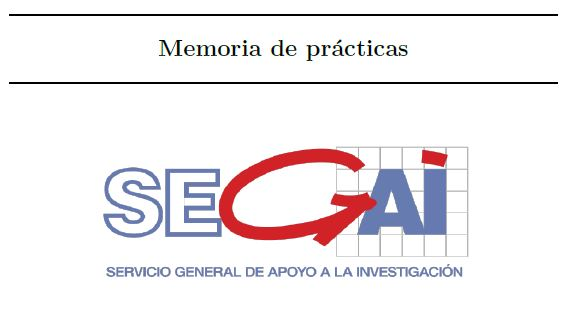
Other
External internship report.
Detailed report of the external practices carried out in the framework of the curriculum of the degree in physics that I studied at the ULL. In this technical report I describe my time at the research support center of the ULL (SEGAI), specifically in the X-ray diffraction and electron microscopy services.
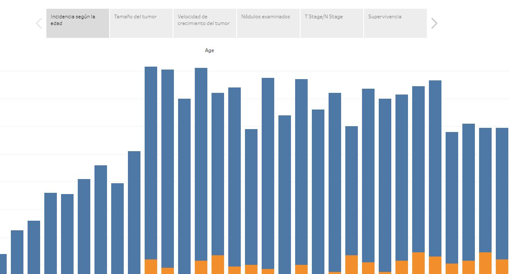
Tableau
Dashboard about breast cancer.
Interactive visualization made in Tableau on the incidence and treatment of breast cancer, as well as the survival rate depending on the grade of the disease, its growth speed and how the number of nodes examined or the size of the tumor influences.